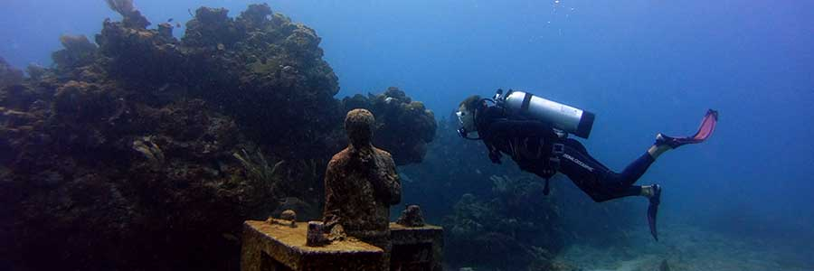

Cancun's Best Dive Sites for Beginners and the Refresher Course
by Nicholas Hosken
Posted on 30 December 2017

Whether you have just recently finished your Open Water Diver Certification, or it has been a few years since you last hit the water, jumping back over the side can sometimes feel quite daunting. If you can relate to this, why not consider making you next plunge at one our shallow, calm and spectacularly beautiful dive sites near sunny Cancun?
Found on the very north east coast of Mexico's Yucatan Peninsula, Cancun is a scuba divers paradise surrounded by the very warm, crystal blue Caribbean Sea. And with so many amazing dive sites to choose from, finding the right trip for your skill level is actually really quite easy. However, while each and every site truly does have its own little "something special", there are a few spots which simply shouldn't be missed and are easily accessible, whatever your skill level in the water. They are especially perfect for those of you who have recently finished your Open Water Diver Course or for those who may have been out of the water for a little while and want to ease yourselves back in with quick refresher.
MUSA - Cancun's Underwater Museum
Perhaps the single most famous dive site in Cancun, maybe even Mexico, has got to be Cancun's Underwater Museum. Positioned on one of the busiest stretches of water in the world for both divers and snorkelers, this brainchild of the British artist Jason DeCaires was built to relieve some of the pressure from all the visitors on the surrounding reefs. These life-size sculptures have all been built with marine grade cement which allows algae to grow on their surface and, in turn, lets coral take hold. Visiting these manmade sculptures, you will see how they are now slowly transforming into an artificial reef.
"The ocean is the most incredible exhibition space an artist could ever wish for."
As the largest underwater museum in the world, MUSA is definitely worth a visit just for it being such a perfect bucket list item. It is also great place to find Southern Sting Rays which often like hide themselves just beneath the sand surrounding the sculptures to rest. Furthermore, the museum is situated in very shallow water which is protected from heavy currents by the Island of "Isla Mujeres" and Cancun's hotel zone. So if you have kids 10yrs or older, this is absolutely, without a doubt, the very best opportunity you'll ever have to introduce them to the underwater world.
Manchones Reef
Just a short two minute boat ride from MUSA, we find the stunning Manchones Reef system which is one of our healthiest reefs in the Mexican state of Quintana Roo. It owes its health to its shallow depth (approximately 9m/30ft) and the crystal clear water in which it finds itself. These two characteristics allow for a large amount of sunlight to hit the reef which means photosynthesis can easily occur in the algae found here. And when specific algae is able to thrive, coral heads are able to flourish and the entire local ecosystem begins to bloom leading to a large schools of fish and other sea life moving in.
There are so many different species which thrive on these reefs and it is not uncommon to also find rare fish such as the Jackknife Drum Fish or the Splendid Toad Fish hiding beneath its coral ledges. However, besides the calm, clear and warm water, what really makes this reef special for the beginner is the chance for you to see your first turtle! This is largely in part due to the great work being done by Tortugranja (Translation: Turtle Farm), a turtle sanctuary found on the nearby coast of Isla Mujeres. Tortugranja moves turtle nests around the island to a little safe zone where they can hatch in relative safety. On display in their tanks, they have turtles or different ages and sizes who are temporally being cared for by the staff before being released back into the wild when they find local reefs such as Manchones to make their home. With tickets available at the door at only $3 per a person, Tortgranja is also an awesome destination for families with younger kids and, as the money raised actually goes to helping the animals (unlike some of the other "animal encounters" on the island), you can visit them with a good conscience. Visit the Tortugranja Facebook Page for more info about the tour.
The Cenotes
Home to world's longest known underground river, the Yucatan coast is dotted with hundreds of freshwater sinkholes known locally as cenotes. Offering a unique opportunity to explore the world beneath our feet, these cenotes draw thousands of divers, from across the globe, each year. If you decide to visit a cenote, you will begin your adventure with a drive through the Yucatan jungle by truck where you can try listening for shrieking roar shrieking snarls of the jaguar and the deep, boisterous shouts of the howler monkeys hanging overhead. Then, usually after a short trek on foot, we drop into the cool, refreshing and absolutely clear cenote waters below.
Sites to look out for on your cenote dive include beautiful rock formations, smoky haloclines where fresh and saltwater meet, animal fossils and spooky hydrogen sulphide clouds.
The good news is that the cenotes aren't only for the "Rambo" types with years of diving experience either. Speak with your guide when you make your booking so that we can discuss your comfort and experience levels. With more than 300 cenotes to choose from, we are sure to find one or two just perfect for you.
Bookings
The above ideas are just a small taste of the many, many dive and adventure options available to visitors of Cancun, Playa del Carmen and Cozumel. If you would like to ask any questions or make a booking, please don't hesitate to get in touch via our contact page.